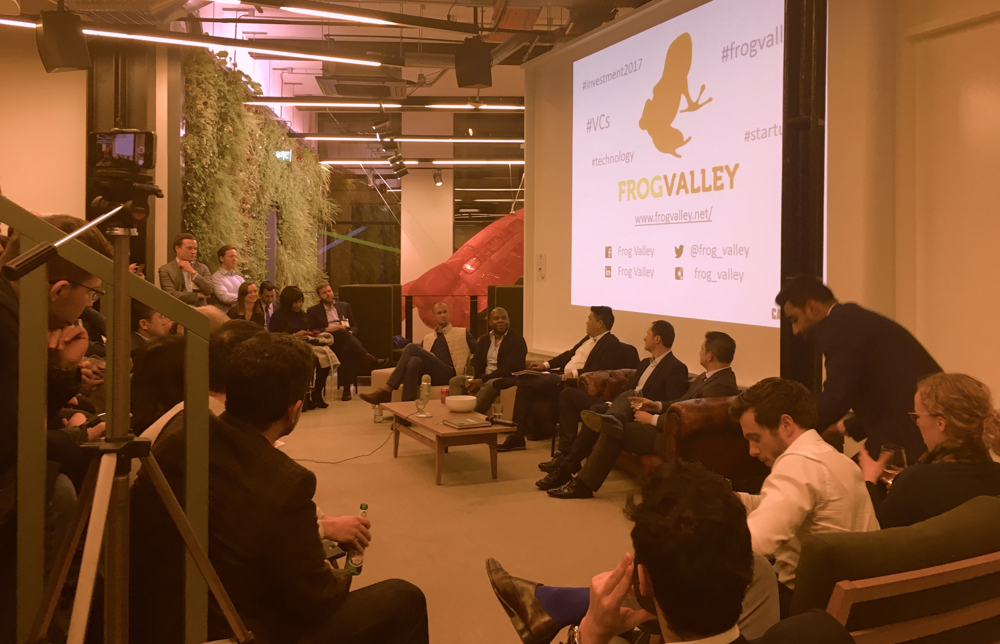

Frog Valley is a networking and events organisation for entrepreneurs in London, created by Loic Dumas in 2010
Panel discussion, Pitch my Wallet, Success Stories
On our events, on success story, on entrepreneurs
Internship, startup directory and others
Venue: Capco - 77-79 Great Eastern St, London EC2A 3HU
on a map...Should you want to join us, please register on our
meetup pageVenue: Wayra - 20 Air St, Soho, London W1B 5AN
on a mapShould you want to join us, please register on our
meetup pageFrog Valley, in partnership with CAPCO, was hosting a special speakers’ panel and networking event focused on Venture Capital.
Senior VC professionals from leading organisations will be discussing their views around key trends of the sector in 2017, e.g.:
if you missed the event, you can read our article or watch the video
On 6th December 2016, Frog Valley organised its first pitching event Pitch My Wallet where we invited 5 start-ups to present in front of 4 investors. Our event was hosted by our partner Capco and sponsored by Workshopr and French Radio London. In addition we had a fantastic audience of 65 people. Each start-up had 5 minutes to present their business, followed by a Q&A from the investors and the audience. Typically the questions raised by the investors were related to, what problem are you trying to solve?, What is the solution? What is your product? What is your market and its size?, who are your competitors? And what is your value added proposition? ...
if you missed the event you can read our article